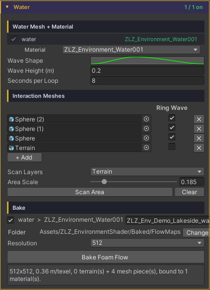
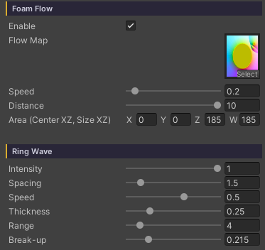

Water Ring Wave
Thin bands of foam spreading outward around a rock, a small island or a post standing in the water — like waves meeting an obstacle and rippling back out. It makes an object planted in the water look like it belongs there, instead of a model dropped on top of a surface.
These are not compass-drawn circles: the bands are contour lines that follow the object’s shape. Close in they hug its silhouette, easing round as they travel outward, so a long rock gets long ovals rather than circles that fight its form.
All of it comes from a map baked ahead of time, so nothing measures distance at runtime.
Showcase Water Ring Wave
Setup
Ring Wave builds on the Foam Flow system. Four things have to be in place before any rings appear.
- On the material — turn on the Foam feature
- On the material — in the Foam section, turn on Foam Flow
- On the water object — pick the pieces that should throw rings, then Bake (see the next section)
- On the material — in the Ring Wave group, raise Intensity above
0
The sliders stay locked until a baked Flow Map is bound. That is not a fault — the Flow Map slot defaults to flat grey, which decodes into phantom rings covering the entire surface. They stay locked until there is real data to read.
Shore Flow — Pick the Pieces, Then Bake
Found under Dashboard > Water (or straight on the water object’s Inspector, if it does not sit under a Dashboard).

1. Scan for pieces
- Scan Layers — which layers to search
- Area Scale (
0.05–1) — the fraction of the water body covered.1= the whole surface; lower values focus on the middle zone, which also packs the map’s resolution into that zone. It draws live as a gold rectangle in the Scene view, so the reach is never a guess - Press Scan Area — every piece that rises above the waterline inside the rectangle goes into a freshly rebuilt list
Scan sets a starting value per piece type.
| Type | Ring Wave default | Why |
|---|---|---|
| Terrain | Off | It is a coastline: it should get foam running down its shore, not rings |
| Mesh | On | It is a rock, a post or a prop, the kind of thing rings belong around |
If a piece you expected never shows up, check the Console — every skipped candidate is listed by name with its reason (layer not in Scan Layers / entirely below the waterline / outside the Area Scale rectangle), and clicking the name jumps straight to the object.
2. Tick Ring Wave per piece
Each row in the list is one piece, with a Ring Wave checkbox.
- Every listed piece shapes the foam flow field (foam runs down its shore) whether or not it is ticked
- Ticking Ring Wave adds rings radiating from that piece on top
Use + Add to add one by hand, ✕ to remove a row, Clear to empty the list.
3. Bake
- Tick which water bodies to bake and name the texture per row (default
<Scene>_<Object>_FlowMap) - Folder — defaults to
Assets/ZLZ_EnvironmentShader/Baked/FlowMaps, changeable - Resolution —
128/256/512/1024. Flow is low-frequency data, so the resolution does not have to scale with the size of the scene;256covers most work - Press Bake Foam Flow — it rasterizes, saves and binds to the material on its own: no dialogs, and Undo works
Edit the list and you have to bake again. A banner appears saying “List changed. Press Bake Foam Flow to apply” — it never bakes silently behind you.
Parameters
All of these live on the material under Foam > Foam Flow > Ring Wave.

- Intensity (
0–1, default0) — the master switch and the strength of the rings.0= off, and the remaining sliders stay hidden until you raise it - Spacing (
0.25–10, default1.5) — the distance between bands, in metres. Lower = tight rings, like fast chop - Speed (
-2–2, default0.5) — how fast the bands travel. Positive expands outward, negative contracts (waves running back toward the object) - Thickness (
0.05–0.9, default0.25) — the width of each foam band. Low = a sharp thin line, high = a soft wide one - Range (
0.5–30, default8) — how many metres the rings reach before fading out completely - Break-up (
0–1, default0.5) — warps the radius and tears the bands into arcs, so they read as hand drawn instead of compass drawn.0= perfectly smooth rings
Behaviour Worth Knowing
- Rings scale themselves to the piece. The bake measures each piece’s footprint into the map, then Spacing and Range are scaled by it against a 5 metre reference piece. A pebble gets small tight rings and a boulder gets wide ones from the same sliders — no separate material needed
- Rings emerge from the object’s edge rather than popping in fully formed. The area on the piece itself is a flat zero-distance plateau, so without a fade-in over the first stretch of distance a new ring would light that whole area up at once — a solid disc flashing for a frame before it reads as a ring
- The map stores distance up to 30 metres, which is exactly where the Range slider tops out. There is no data past that
- A piece that is entirely below the waterline is never picked up; part of it has to break the surface
- Rings are foam on the surface only — they do not bend the normal, so they leave lighting and reflections alone. That is the difference from Water Interaction, which really does bend it
Works With Other Features
Foam
Ring Wave is a layer on top of the whole Foam system, so it shares Foam Color and its opacity with the other foam. To make the rings stand out without touching the shoreline foam, turn down Foam Noise > Opacity rather than the Foam Color.
Underwater
With the Underwater feature on, the rings are visible from below too, through Foam & Rings in the Underwater section. It reads the same bake — nothing extra to run.
Water Interaction
Different systems that complement each other: Ring Wave is rings around things standing still, Interaction is rings made by things moving. Run both together; they never fight.
Good to Know
- Baking only works in a Scene, because the map holds world-position data. In Prefab Mode the button is disabled and says so — though Scan does work in Prefab Mode, scoped to the prefab’s own contents
- Two water bodies sharing one material will overwrite each other’s bake. A warning appears before you press the button — give each water body its own material
- Re-baking reuses the existing asset rather than creating a new one, so material references never break. Renaming the file or moving the folder keeps its GUID, so nothing breaks there either
- It is computed entirely on the CPU — no camera, no GPU readback — so the result is identical on every machine and in every editor state
- The map file is tiny, and it travels with Prefabs and Scenes like every other baked asset
- It costs practically nothing at runtime: it reads the texture Foam Flow is already reading, not a new one